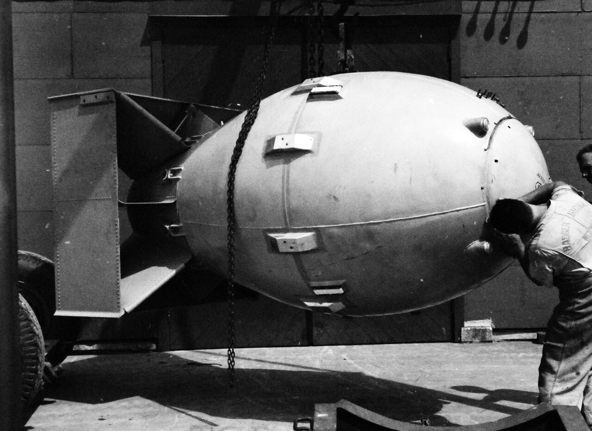

What Are They
The atomic bombs were the first nuclear weapons developed. They were capible of mass destruction when they would go off and leave lasting effects due to the radiation left behind.
Who Made Them and Why
They were made by the United States government in the Manhattan Project conprised of scientist. They were made out of fear that Germany might do the same. The threat of Germany doing making these weapons was sent to the president of the United States by Leo Szilard and Albert Einstein.
Atomic Bomb Fat Man

Why Were They Important
They played a very important role in desiding the fate of World War II. After they were dropped on Japan, they soon surendered. Much of the research that went into delevoping these bombs greatly aided in the rise of nuclear energy.